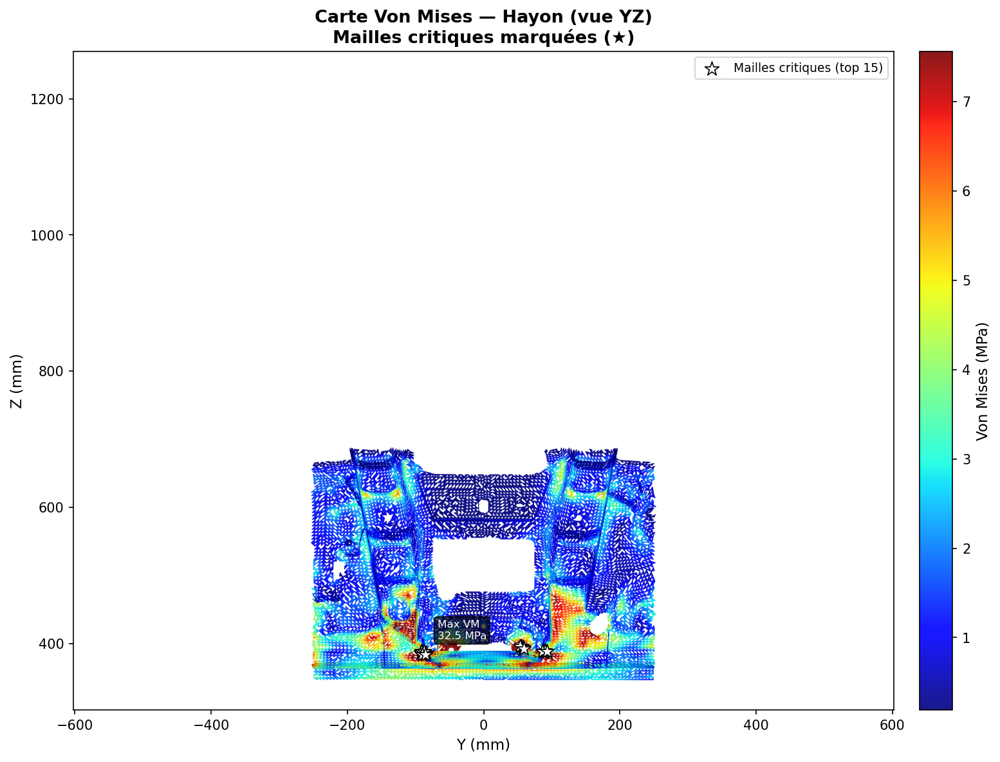
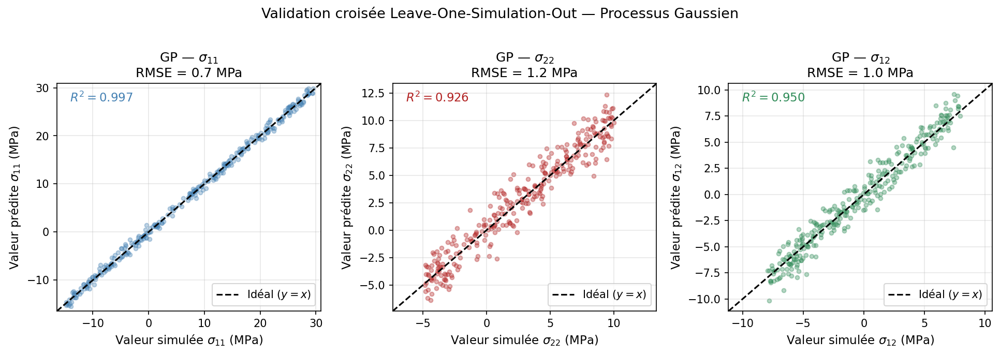
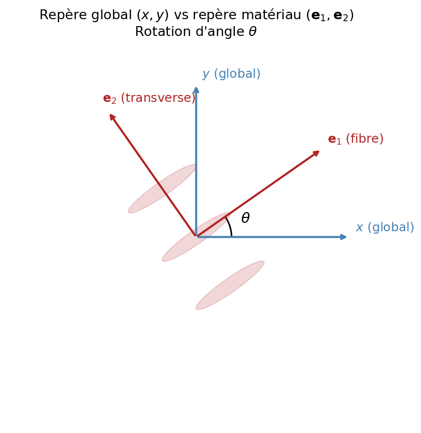
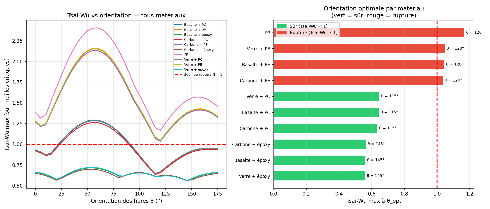
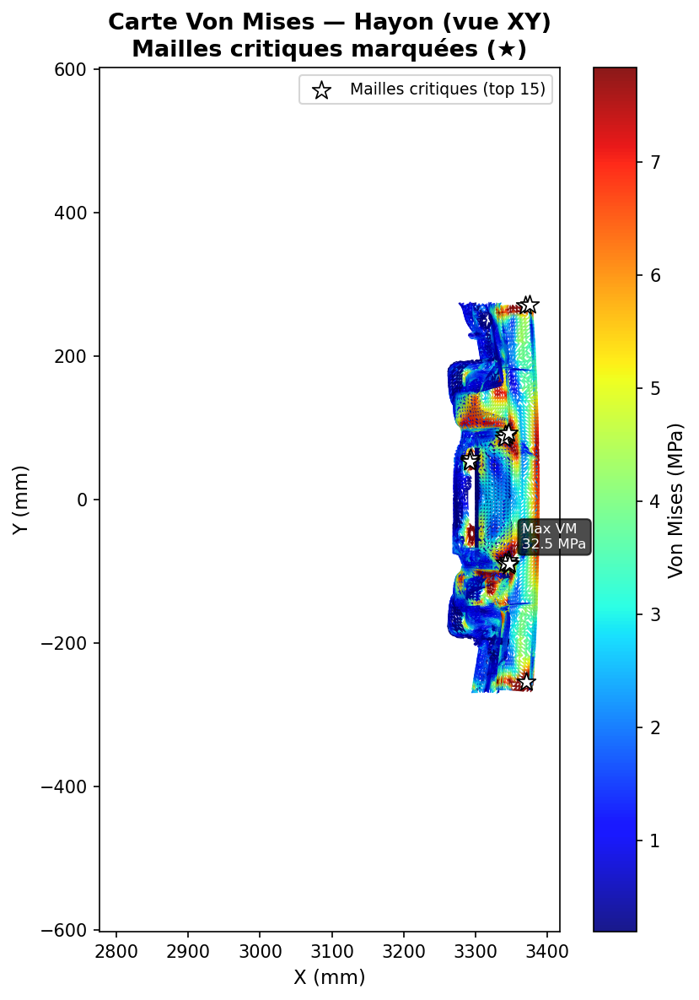

Composite Tailgate Optimization
Select the optimal composite material and fiber orientation for a car tailgate panel under crash (slam) loading, minimizing the Tsai-Wu failure criterion while keeping the finite-element cost of exploring the material/orientation design space low.
-
 Python
Python
-
 ABAQUS
ABAQUS
-
 scikit-learn
scikit-learn
-
 NumPy
NumPy
Project Description
Continuous-fiber composites offer much higher stiffness-to-weight ratios than conventional steel, but their strongly anisotropic behavior means performance depends on both the material choice (fiber and matrix) and the fiber orientation relative to the loading directions. Re-running a finite-element simulation for every combination would be computationally prohibitive, so this project (team of 4, ENSAM 2026) combines Abaqus simulations with a Gaussian Process surrogate model to make the exploration fast enough to optimize densely over fiber orientation.
Milestone 1 – Finite Element Model & Critical Zone Selection
- FE model: tailgate meshed in Abaqus with 13,028 S3 shell elements (plane-stress shells), loaded under a door-slam load case
- Material catalog: 10 configurations spanning 3 fiber types (glass, basalt, carbon) × 3 matrices (PE, PC, epoxy), plus an isotropic PP reference
- Spatial filtering: boundary elements excluded (|Y| > 250 mm) to remove artificial stress concentrations from the boundary conditions
- Critical zones: the 30 most-loaded elements per simulation (top 15 in each of two symmetric zones) are kept, giving a dataset of 300 points across the 10 materials

Milestone 2 – Gaussian Process Surrogate Model
- Surrogate: three independent Gaussian Processes (scikit-learn, RBF + white-noise kernel) predict the S11, S22, S12 stress components as a function of (E, ν, element ID)
- Goal: predict stresses for any material (E, ν) at near-zero cost, enabling a dense sweep over fiber orientation without new Abaqus runs
- Validation: Leave-One-Simulation-Out cross-validation (an entire material held out at each fold) — a stricter test than standard CV since it checks interpolation between materials
- Accuracy: RMSE of 0.7–1.2 MPa on all three stress components, corresponding to a relative error below 3%

Milestone 3 – Stress Rotation & Tsai-Wu Criterion
- Stress rotation: predicted stresses are rotated from the global frame (x, y) into the material frame (e₁ fiber, e₂ transverse) for each candidate fiber angle θ
- Failure criterion: the quadratic Tsai-Wu criterion is evaluated on each critical element (f < 1 → safe, f ≥ 1 → failure)
- Grid search: for each material, θ* ∈ [0°, 175°] is found by minimizing the worst-case (max) Tsai-Wu value over the 30 critical elements
- Key finding: the matrix (PE / PC / epoxy) is the dominant factor — all epoxy-based composites are safe (f ≤ 0.57) while all PE-based ones fail, regardless of fiber type

The methodology successfully identifies a safe, lightweight composite configuration while cutting the number of required Abaqus simulations from a full material × orientation grid down to only 10 reference runs, with the Gaussian Process surrogate covering the rest of the design space.
- Optimal material: Glass + epoxy at θ* = 145°
- Tsai-Wu criterion: f = 0.56 (44% safety margin)
- Stress reduction: peak Von Mises stress drops from 52.0 MPa (isotropic PP) to 20.4 MPa (glass/epoxy) — a 61% reduction
- Surrogate accuracy: below 3% relative error on all stress components (LOSO validation)
- Consistency: optimal orientation is stable within each matrix family (145° for epoxy, 115° for PC, 120° for PE), confirming the robustness of the surrogate model


